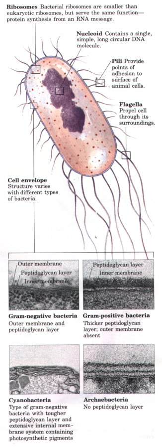
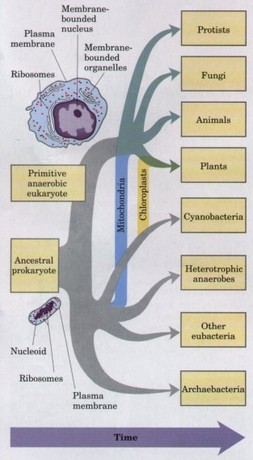
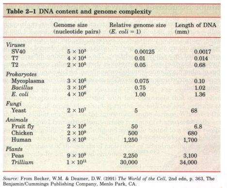
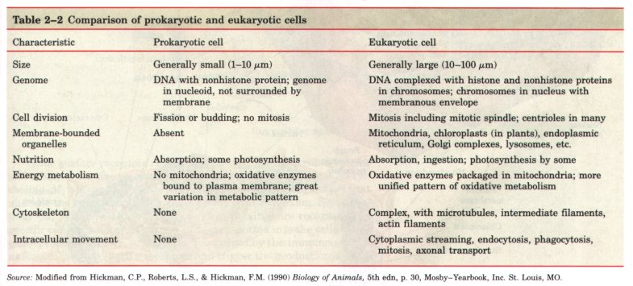
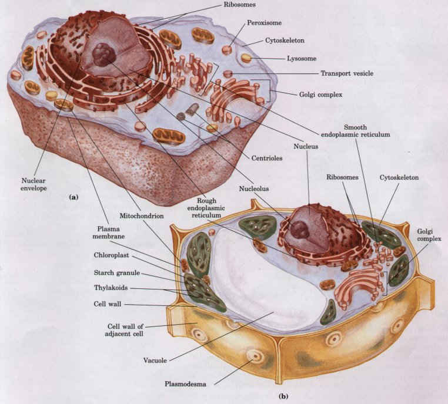
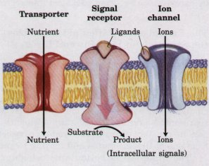

| Bacterial cells share certain common
structural features, but also show group-specific
specializations (Fig. 2-6). E. coli is a usually
harmless inhabitant of the intestinal tract of human
beings and many other mammals. The E. coli cell
is about 2 μm long and a little less than 1 μm in
diameter. It has a protective outer membrane and an inner
plasma membrane that encloses the cytoplasm and the
nucleoid. Between the inner and outer membranes is a thin
but strong layer of peptidoglycans (sugar polymers
cross-linked by amino acids), which gives the cell its
shape and rigidity. The plasma membrane and the layers
outside it constitute the cell envelope.
Differences in the cell envelope account for the
different affinities for the dye Gentian violet, which is
the basis for Gram's stain; gram-positive bacteria retain
the dye, and gram-negative bacteria do not. The outer
membrane of E. coli, like that of other
gram-negative eubacteria, is similar to the plasma
membrane in structure but is different in composition. In
gram-positive bacteria (Bacillus subtilis and Staphylococcus
aureus, for example) there is no outer membrane, and
the peptidoglycan layer surrounding the plasma membrane
is much thicker than that in gram-negative bacteria. The
plasma membranes of eubacteria consist of a thin bilayer
of lipid molecules penetrated by proteins.
Archaebacterial membranes have a similar architecture,
although their lipids differ from those of the
eubacteria. The plasma membrane contains proteins capable of transporting certain ions and compounds into the cell and carrying products and waste out. Also in the plasma membrane of most eubacteria are electron-carrying proteins (cytochromes) essential in the formation of ATP from ADP (Chapter 1). In the photosynthetic bacteria, internal membranes derived from the plasma membrane contain chlorophyll and other light-trapping pigments. From the outer membrane of E. coli cells and some other eubacteria protrude short, hairlike structures called pili, by which cells adhere to the surfaces of other cells. Strains of E. coli and other motile bacteria have one or more long flagella, which can propel the bacterium through its aqueous surroundings. Bacterial flagella are thin, rigid, helical rods, 10 to 20 nm thick. They are attached to a protein structure that spins in the plane of the cell surface, rotating the flagellum. |
 Figure 2-6 Common structural features of bacterial cells. Because of differences in cell envelope structure, some eubacteria (gram-positive bacteria) retain Gram's stain, and others (gram-negative bacteria) do not. E. coli is gram-negative. Cyanobacteria are also eubacteria, but are distinguished by their extensive internal membrane system, in which photosynthetic pigments are localized. |
The cytoplasm of E. coli contains about 15,000 ribosomes, thousands of copies of each of several thousand different enzymes, numerous metabolites and cofactors, and a variety of inorganic ions. Under some conditions, granules of polysaccharides or droplets of lipid accumulate. The nucleoid contains a single, circular molecule of DNA. Although the DNA molecule of an E. coli cell is almost 1,000 times longer than the cell itself, it is packaged with proteins and tightly folded into the nucleoid, which is less than 1 μm in its longest dimension. As in all bacteria, no membrane surrounds the genetic material. In addition to the DNA in the nucleoid, the cytoplasm of most bacteria contains many smaller, circular segments of DNA called plasmids. These nonessential segments of DNA are especially amenable to experimental manipulation and are extremely useful to the molecular geneticist. In nature, some plasmids confer resistance to toxins and antibiotics in the environment.
There is a primitive division of labor within the bacterial cell. The cell envelope regulates the flow of materials into and out of the cell, and protects the cell from noxious environmental agents. The plasma membrane and the cytoplasm contain a variety of enzymes essential to energy metabolism and the synthesis of precursor molecules; the ribosomes manufacture proteins; and the nucleoid stores and transmits genetic information. Most bacteria lead existences that are nearly independent of other cells, but some bacterial species tend to associate in clusters or filaments, and a few (the myxobacteria, for example) demonstrate primitive social behavior. Only eukaryotic cells, however, form true multicellular organisms with a division of labor among cell types.
Fossils older than 1.5 billion years are limited to those from small and relatively simple organisms, similar in size and shape to modern prokaryotes. Starting about 1.5 billion years ago, the fossil record begins to show evidence of larger and more complex organisms, probably the earliest eukaryotic cells (see Fig. 2-5). Details of the evolutionary path from prokaryotes to eukaryotes cannot be deduced from the fossil record alone, but morphological and biochemical comparison of modern organisms has suggested a reasonable sequence of events consistent with the fossil evidence.
| Three major changes must have occurred as prokaryotes gave rise to eukaryotes (Fig. 2-7). First, as cells acquired more DNA (Table 2-1), mechanisms evolved to fold it compactly into discrete complexes with specific proteins and to divide it equally between daughter cells at cell division. These DNA-protein complexes, chromosomes, (Greek chroma, "color" and soma, "body"), become especially compact at the time of cell division, when they can be visualized with the light microscope as threads of chromatin. Second, as cells became larger, a system of intracellular membranes developed, including a double membrane surrounding the DNA. This membrane segregated the nuclear process of RNA synthesis using a DNA template from the cytoplasmic process of protein synthesis on ribosomes. Finally, primitive eukaryotic cells, which were incapable of photosynthesis or of aerobic metabolism, pooled their assets with those of aerobic bacteria or photosynthetic bacteria to form symbiotic associations that became permanent. Some aerobic bacteria evolved into the mitochondria of modern eukaryotes, and some photosynthetic cyanobacteria became the chloroplasts of modern plant cells. Prokaryotic and eukaryotic cells are compared in Table 2-2. |  Fignre 2-7 One view of how modern plants, animals, fungi, protists, and bacteria share a common evolutionary precursor. |


With the rise of primitive eukaryotic cells, further evolution led to a tremendous diversity of unicellular eukaryotic organisms (protists). Some of these (those with chloroplasts) resembled modern photosynthetic protists such as Euglena and Chlamydomonas; other, nonphotosynthetic protists were more like Paramecium or Dictyostelium. Unicellular eukaryotes are abundant, and the cells of all multicellular animals, plants, and fungi are eukaryotic; there are only a few thousand prokaryotic species, but millions of species of eukaryotic organisms.

Figure 2-8 Schematic illustration of the two types of eukaryotic cell: a representative animal cell (a) and a representative plant cell (b).
Typical eukaryotic cells (Fig. 2-8) are much larger than prokaryotic cells-commonly 10 to 30 μm in diameter, with cell volumes 1,000 to 10,000 times larger than those of bacteria. The distinguishing characteristic of eukaryotes is the nucleus with a complex internal structure, surrounded by a double membrane. The other striking difference between eukaryotes and prokaryotes is that eukaryotes contain a number of other membrane-bounded organelles. The following sections describe the structures and roles of the components of eukaryotic cells in more detail.
| The external surface of a cell is in contact with other cells, the extracellular fluid, and the solutes, nutrient molecules, hormones, neurotransmitters, and antigens in that fluid. The plasma membranes of all cells contain a variety of transporters, proteins that span the width of the membrane and carry nutrients into and waste products out of the cell. Cells also have surface membrane proteins (signal receptors) that present highly specific binding sites for extracellular signaling molecules (receptor ligands). When an external ligand binds to its specific receptor, the receptor protein transduces the signal carried by that ligand into an intracellular message (Fig. 2-9). For example, some surface receptors are associated with ion channels that open when the receptor is occupied; others span the membrane and activate or inhibit cellular enzymes on the inner membrane surface. Whatever the mode of signal transduction, surface receptors characteristically act as signal amplifiers-a single ligand molecule bound to a single receptor may cause the flux of thousands of ions through an opened channel, or the synthesis of thousands of molecules of an intracellular messenger molecule by an activated enzyme. |  Figure 2-9 Proteins in the plasma membrane serve as transporters, signal receptors, and ion channels. Extracellular signals are amplified by receptors, because binding of a single ligand molecule to the surface receptor causes many molecules of an intracellular signal molecule to be formed, or many ions to flow through the opened channel. Transporters carry substances into and out of the cell, but do not act as signal amplifiers. |
Some surface receptors recognize ligands of low molecular weight, and others recognize macromolecules. For example, binding of acetylcholine (Mr 146) to its receptor begins a cascade of cellular events that underlie the transmission of signals for muscle contraction. Blood proteins (Mr > 20,000) that carry lipids (lipoproteins) are recognized by specific cell surface receptors and then transported into the cells. Antigens (proteins, viruses, or bacteria, recognized by the immune system as foreign) bind to specific receptors and trigger the production of antibodies. During the development of multicellular organisms, neighboring cells influence each other's developmental paths, as signal molecules from one cell type react with receptors of other cells. Thus the surface membrane of a cell is a complex mosaic of different kinds of highly specific "molecular antennae" through which cells receive, amplify, and react to external signals.
Most cells of higher plants have a cell wall outside the plasma membrane (Fig. 2-8b), which serves as a rigid, protective shell. The cell wall, composed of cellulose and other carbohydrate polymers, is thick but porous. It allows water and small molecules to pass readily, but swelling of the cell due to the accumulation of water is resisted by the rigidity of the wall.